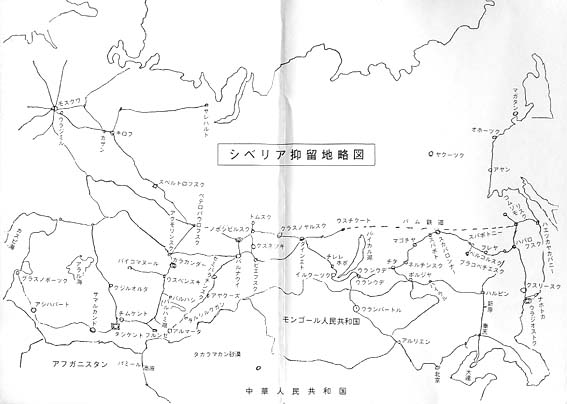

|
ま え が き
昭和二十年八月九日未明､ソ連は何の前触
れもな(､一方的に対8宣戦を布告し､ソ満
国境を突放し､圧倒的兵力をもって怒涛の如
く満州全土を席巻した｡
これは､日本がやがてポツダム宣言を受諾
して無条件降伏をすることを察知して､それ
を承知の上でとったソ連の行動であった｡
この時､わが関東軍は､全満に亘り空巣同
然の戦力でしかなかった｡
抗戦むなしく､幾十万の同胞は､そ連軍の
餌食となり､戦野に屍を曝さなければならな
かった｡これが僅か旬余の戦火がもたらした
犠牲であった｡そうして多くの悲劇的痛恨の
満州孤児を残した｡
更にソ連は､自国の戦後復興の労役に服さ
せるため､関東軍将兵並びに一般在満邦人ま
でも､無差別に拉致して､シベリアに強制抑
留した｡
飢餓と酷寒にさらしながら､奴隷同然の苛
酷な重労働を強いたのである｡
しかしながら､このソ連強制抑留者に対し
ては､わが国は今日なお､何ら報ゆるところ
なく放置している｡
異国の丘で奴隷のように酷使されたあの惨
状を､唯過去の悪夢として葬り去ることは､
倒底忍び得ないのである｡
広島や長崎では､毎年原爆投下の日となる
と､盛大な慰霊祭が行なわれる｡原爆の悲惨
さを思い､二度とこのような残虐な兵器が使
われないようにと､政府も世界に向って真剣
に訴えている｡
これに反して､ソ連抑留犠牲者に対しては､
国は捨てて顧みないのは､あまりに冷淡無情
と云わねばならない｡
俘虜抑留は､戦いが済んでからの事件であ
るから､余計に痛ましく残念である｡
戦後､北方海域において､ソ連により拿捕
された日本漁船等に対しては､政府は莫大な
補償金を支払ったと報道されている｡同じ日
本国民でありながら､どうしてこんなにも取
扱いが違うのか､納得できない｡
さて私は､幸いにも､奴隷労働から生きの
びて､帰還することができた｡
ここに､せめてものことに､シベリアにお
けるわれわれの奴隷的生きざまを､広く国民
に知って貰いたいと思って筆を執った｡そう
して､これは亡き戦友へ捧げる鎮魂譜である｡
地下の英霊よ､受け給へ｡
新田直人
１９８２年６月１日
|
| |
 |